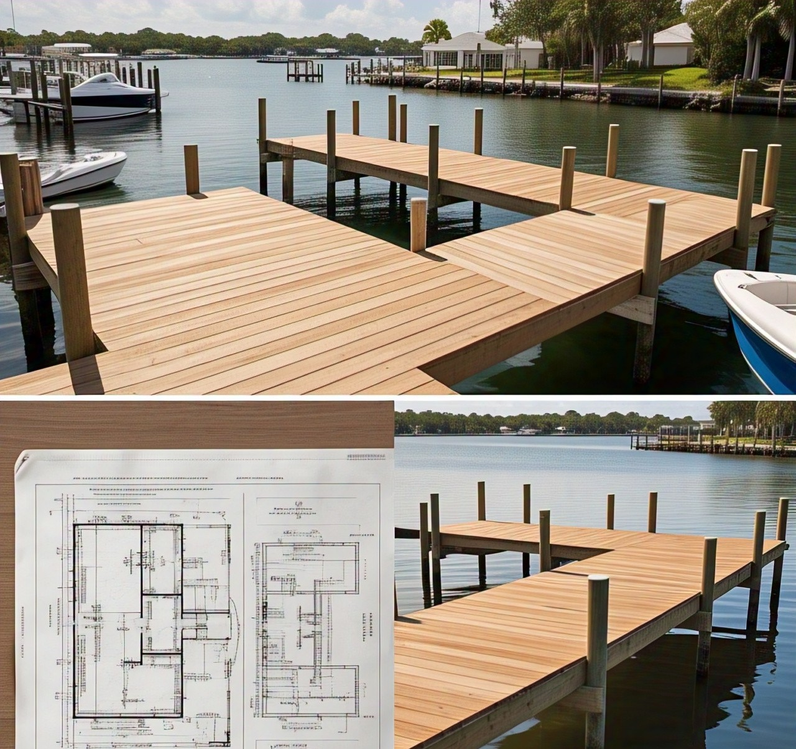

Design
Custom & Creative Dock Design
Our design team works closely with you to create a dock that not only meets functional requirements but also reflects your personal style. We consider every factor:
- Site analysis, hydrological conditions, and environment.
- Optimization of space and functionality.
- Selection of suitable, durable, and aesthetic materials.
- Intuitive 3D designs to help you visualize the structure clearly.
- Compliance with Florida's safety regulations and standards.
For more details, please contact us directly.
